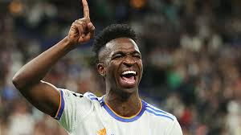

подробно о винисиусе

ини́сиус Жозе́ Пайша́н де Оливе́йра Жу́ниор
(порт. Vinícius José Paixão de Oliveira Júnior; бразильский португальский:
род. 12 июля 2000[2][3], Сан-Гонсалу, Рио-де-Жанейро), широко известный
как просто Винисиус Жуниор (порт. Vinícius Júnior; бразильский португальский:
— бразильский и испанский футболист, нападающий клуба «Реал Мадрид» и игрок сборной Бразилии.
В 2018 году Винисиус подписал контракт с «Реалом».
Мадридцы заплатили за него «Фламенго» 45 миллионов евро,
что считается самой дорогой сделкой в мире, среди игроков до
19 лет. Первый игрок в истории «сливочных» 2000 года рождения,
сыгравший официальный матч и отметившийся голом.